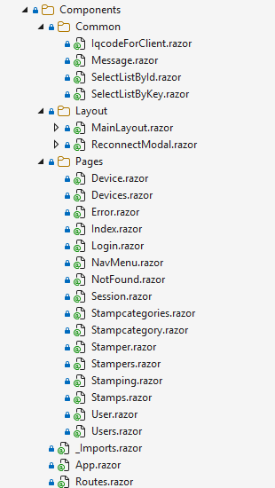

Käyttöliittymäkomponentit
 Komponentit on jaettu kolmeen pääryhmään: Common, Layout ja Pages. 'Pages'-kansiossa sijaitsevat sovelluksen eri näkymät (esim. users.razor). Näkymällä voi olla erillinen taustakooditiedosto (users.razor.cs), joka käsittelee näytön toiminnallisuuden. Toiminnallisuus voi kuitenkin sijaita myös suoraan näkymätiedostossa `@code`-lohkossa, jos koodia on vähän. Tällöin on helpompaa hahmottaa HTML-rakenne ja siihen liittyvät toiminnot samanaikaisesti. Jokainen näkymä käynnistyessään lataa State-luokassa olevan instanssin modelista. Jos sitä ei ole vielä ladattu, se suorittaa tietojen haun ja käyttää saatuja tietoja näytettävien tietojen esittämiseen ja syötteiden käsittelyyn.
Esimerkki sivusta jossa taustakoodi on @code lohkossa.